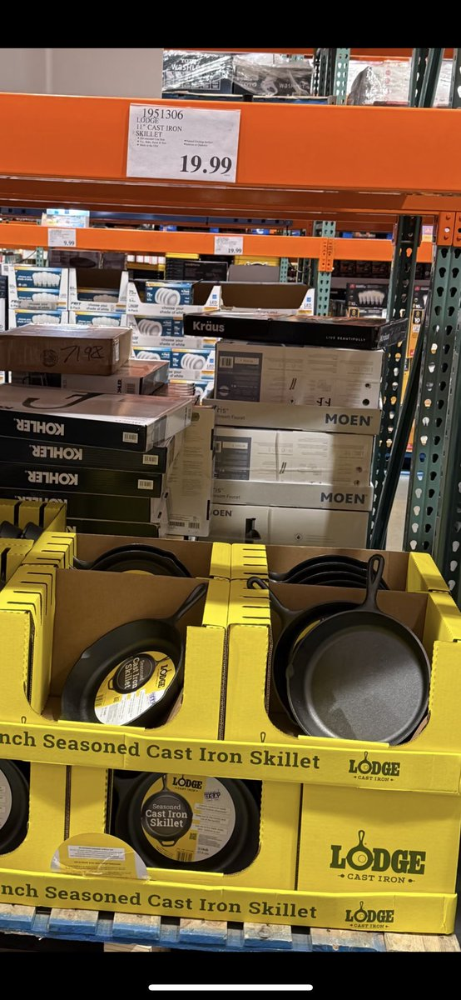

药物实验室
@RXdruglab
@Rustallintsla 厚底涂层锅是最好的，我用wmf的蜂窝平底锅，是我用过的超过10种平底锅中最好的。
另外两厘米厚的铁板也特别好，但是用起来麻烦。

Rustallintsla
@Rustallintsla
之前看有人推荐过，Costco的铸铁锅，不到20美元，关键是不粘。买了一个回来测试了下，绝了。
亮点： 北美的炉灶火力不行，往往锅烧热了，油也烧热了，但菜一下去，温度无法维持，炒菜成煮菜了。
这个铸铁锅可以吸收储存非常多的热能（因为锅壁厚）， https://t.co/54yEKuw6rE